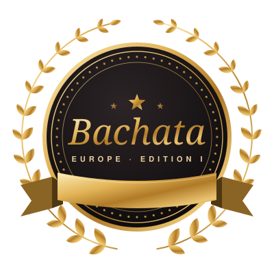

Beste Bachata-Schulen in Europa: das Ranking
Ein Ranking für ganz Europa und ein eigenes Ranking für jedes Land: 1706 Schulen in 39 Ländern, unabhängig bewertet nach öffentlichen Daten.

Rankings nach Ländern
Deutschland
292 Schulen in 121 Städten. Ergebnisse am 20. Dezember 2026 um 19 Uhr.
- 1Alma Dance Frankfurt72,0 / 100
- 2Hamburg Dance Academy69,0 / 100
- 3Cumbancha Tanzschule67,5 / 100
Polen
103 Schulen in 37 Städten. Ergebnisse im Frühjahr 2027.
- 1Salsa Siempre56,5 / 100
- 2Art of Move53,9 / 100
- 3So!Salsa52,8 / 100
Spanien
313 Schulen in 90 Städten. Ergebnisse im Frühjahr 2027.
- 1Salsabachata Ventas54,7 / 100
- 2Salsabachata53,4 / 100
- 3Salsabachata Avenida de América53,4 / 100
Italien
198 Schulen in 68 Städten. Ergebnisse im Frühjahr 2027.
- 1Timba Tumba Dance Academy61,6 / 100
- 2Scuola di Ballo Sampaoli50,9 / 100
- 3Baila Dance46,8 / 100
Portugal
27 Schulen in 12 Städten. Ergebnisse im Frühjahr 2027.
- 1Porto com Salsa34,2 / 100
- 2Academia Salsa Algarve31,5 / 100
- 3Backstage Escola de Dança30,6 / 100
Frankreich
150 Schulen in 45 Städten. Ergebnisse im Frühjahr 2027.
- 1Salsa con Elegua61,3 / 100
- 2SalsaNueva Paris47,7 / 100
- 3Studio 746,3 / 100
Niederlande
89 Schulen in 29 Städten. Ergebnisse im Frühjahr 2027.
- 1Punto Cubano Salsa Amsterdam59,7 / 100
- 2Salsachun49,8 / 100
- 3Salsa te Gusta46,3 / 100
Vereinigtes Königreich
119 Schulen in 50 Städten. Ergebnisse im Frühjahr 2027.
- 1Salsatropical Dance Company56,2 / 100
- 2Salsa Buena Cardiff49,6 / 100
- 3Step By Me Dance Studios33,3 / 100
Belgien
25 Schulen in 11 Städten. Ergebnisse im Frühjahr 2027.
- 1The Embassy Room44,6 / 100
- 2Yuka Dance Academy31,6 / 100
- 3Cuban Salsa Leuven29,0 / 100
Irland
7 Schulen in 5 Städten. Ergebnisse im Frühjahr 2027.
- 1Dublin Salsa Academy32,7 / 100
- 2The Dance Club Kilkenny32,6 / 100
- 3Latin Dance Studio Cork30,8 / 100
Österreich
29 Schulen in 10 Städten. Ergebnisse im Frühjahr 2027.
- 1Lento Dance Studio34,1 / 100
- 2Salsa & Latin Studio Julion32,7 / 100
- 3Dance School Santner32,2 / 100
Schweiz
62 Schulen in 18 Städten. Ergebnisse im Frühjahr 2027.
- 1Salsa in Biel33,1 / 100
- 2Kizomba Genève32,3 / 100
- 3Salsastyle.ch Dance School31,5 / 100
Osteuropa
167 Schulen in 59 Städten. Ergebnisse im Frühjahr 2027.
- 1Plesni Studio Leon34,1 / 100
- 2Bachata Blanca Kyiv33,8 / 100
- 3DANCETIME.RO33,3 / 100
Skandinavien
40 Schulen in 14 Städten. Ergebnisse im Frühjahr 2027.
- 1Ewa Trela Dans34,0 / 100
- 2RHYTHM Latin Dance Studio33,6 / 100
- 3iDance Studio33,6 / 100
Mittelmeer
85 Schulen in 14 Städten. Ergebnisse im Frühjahr 2027.
- 1Mehtap Göl Dans Kursu34,5 / 100
- 2Bailemos Dance School34,3 / 100
- 3Büşra & Emek Dans Akademi34,3 / 100
So bewerten wir
Jede Schule wird nach denselben öffentlichen Kriterien bewertet, in jedem Land gleich: Google-Bewertung, Zahl der Bewertungen, Jahre am Markt, Angebot für Anfänger, Veranstaltungen, Auftritt in sozialen Medien und mehr, zusammen 100 Punkte. Zurzeit zeigen wir für alle Länder denselben Zwischenstand aus zwei Kriterien. So bleibt das Europa-Ranking vergleichbar, bis jedes Land seine vollständigen Daten hat.
Die ausführliche Methode für Deutschland steht hier, die für Polen hier die für Spanien hier die für Italien hier die für Portugal hier die für Frankreich hier die für die Niederlande hier und die für das Vereinigte Königreich hier.
Warum ein Ranking für ganz Europa?
Wer eine gute Bachata-Schule sucht, schaut selten nur in die eigene Stadt: Auf Reisen, beim Umzug oder für ein Wochenende im Nachbarland zählt, wo es gute Kurse gibt. Das Europa-Ranking macht Schulen über Ländergrenzen hinweg vergleichbar, und die Länderseiten zeigen jeweils die beste Schule der Stadt.
Häufige Fragen
Wie entsteht das Europa-Ranking?
Jedes Land bekommt ein eigenes Ranking, und das Europa-Ranking führt alle Schulen zusammen. Überall gilt dieselbe Wertung: neun Kriterien, 100 Punkte, Daten aus Google Maps, von den Schulwebseiten und von Instagram. Was sich nicht bestätigen lässt, zählt mit dem niedrigsten Wert.
Kann eine Schule für einen besseren Platz bezahlen?
Nein. Die Rankings basieren auf öffentlichen Daten und sind nicht käuflich. Anmelden ist kostenlos.
Wann erscheinen die Ergebnisse?
Deutschland am 20. Dezember 2026 um 19 Uhr, Polen, Spanien, Italien, Portugal, Frankreich, die Niederlande, das Vereinigte Königreich, Belgien, Irland, Österreich, die Schweiz, Osteuropa, Skandinavien und Mittelmeer im Frühjahr 2027. Weitere Länder folgen.
Wie kommt meine Schule ins Ranking?
Melde sie kostenlos an. Wir nehmen jede Schule auf, die nachweislich Bachata unterrichtet, auch ohne Anmeldung.
Dein Land fehlt?
Wir starten weitere Länder Schritt für Schritt. Schreib uns an hello@latindanceawards.com, wenn du eine Schule betreibst oder die Szene in deinem Land kennst.